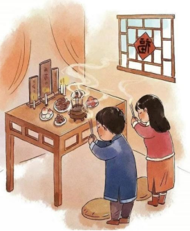

家祭
《示儿》中“王师北定中原日，家祭勿忘告乃翁”中提到了“家祭”二字，那么什么是“家
祭”呢？
“家”甲骨文字形（图1）上面是“宀”(音mián )，《说文》里解释“从
宀，�o省声。”表示与房室有关，“家，居也”，最早的房子是用来祭祀祖先
或家族开会用的。下面是“豕”，即野猪。在远古时期野猪是难得的狩猎品，
那时最隆重的祭祀是用野猪祭祀的。所以“家”这个字本身就含有祭祀的意思。
图 1：家
除了家之外，还要了解“祭”的含义。“祭”是会意字，甲骨文字形（图2）
左边是牲肉，右边是手，中间像桌子，表示以手持肉在桌前祭祀。古人杀牲，一是
为自己吃，二就是常把牲肉放在祭台上。《说文》解释“祭，祀也”。“祭”通常
是对死者表达追悼、敬意的仪式，比如祭奠、祭扫等，是对先人怀念和追思，是尽
孝的一种表现，所以《礼记·祭统》中说“祭者，所以追养继孝也”。此外，“祭”
在祭祀鬼神时，也表示对鬼神的敬畏和对美好未来的期盼，例如祭天、祭灶等。
图 2：祭

“家祭”按范围来分可分为两种:一是家庭祭祀（图3），
二是家族(宗族)祭祀。“家庭祭祀”范围较窄，一般指在父母或
祖辈过世的日子，即所谓“忌日”当天举行。这一天，家人忌饮
酒作乐，故称“忌日”。《礼记·祭义》“君子有终身之丧，忌
日之谓也”。正如《示儿》一诗“王师北定中原日，家祭无忘告
乃翁”中，陆游所说的“家祭”从“乃翁”一词可以看出，此处
所指的是他们家小范围的“家庭祭祀”。而“家族祭祀”范围较
广，规模也较隆重，一般是某个同姓宗族在祖先诞日或忌日时，
在祖庙祠堂举行的祭祀仪式。例如清代诗人查初白的《除夕恩赐
羊鹿》诗中“乡风未敢分僚友，家祭先应荐祖宗”的“家祭”就
属于这种祭祀。
图3：家庭祭祀